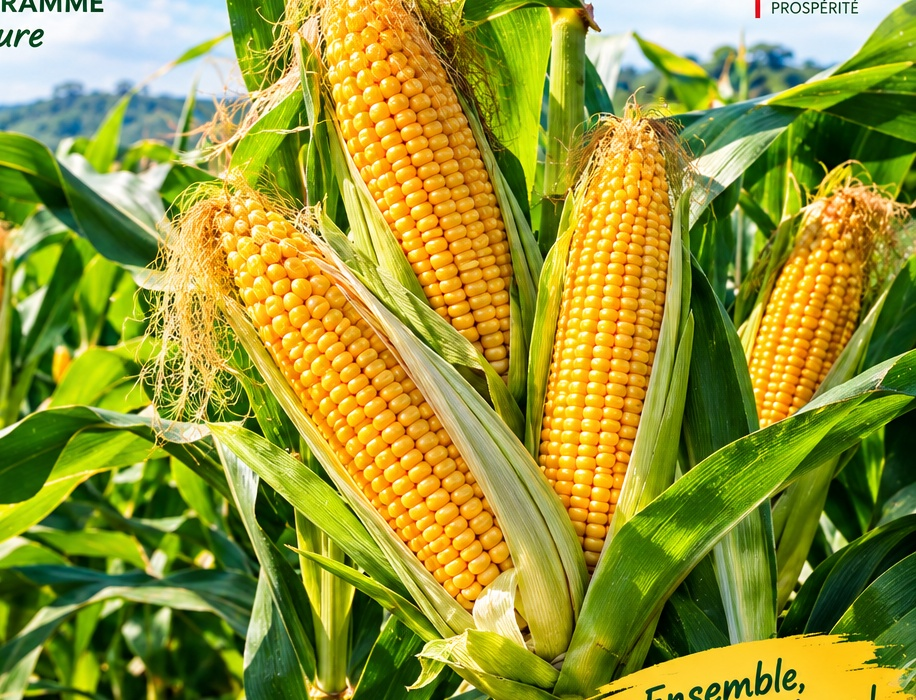
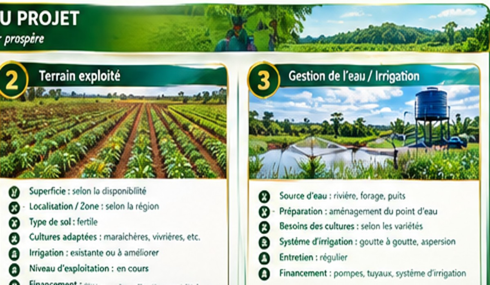
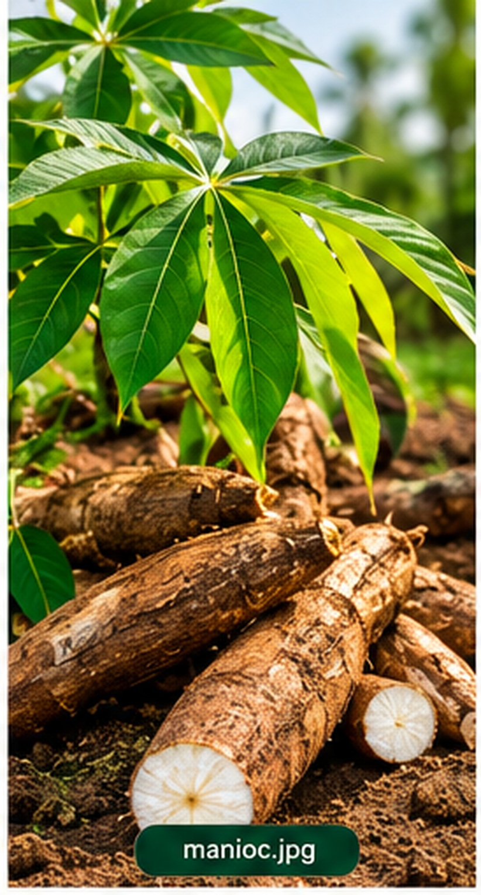
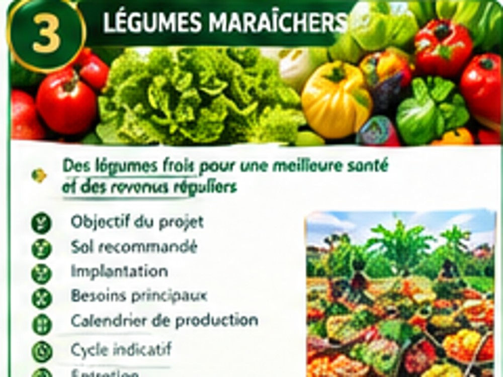
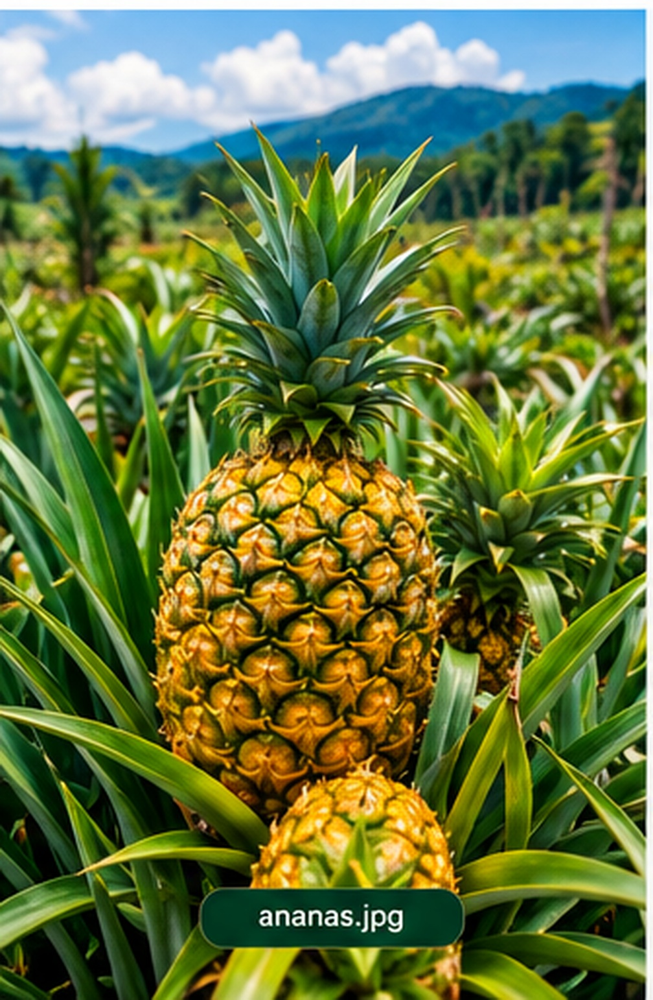
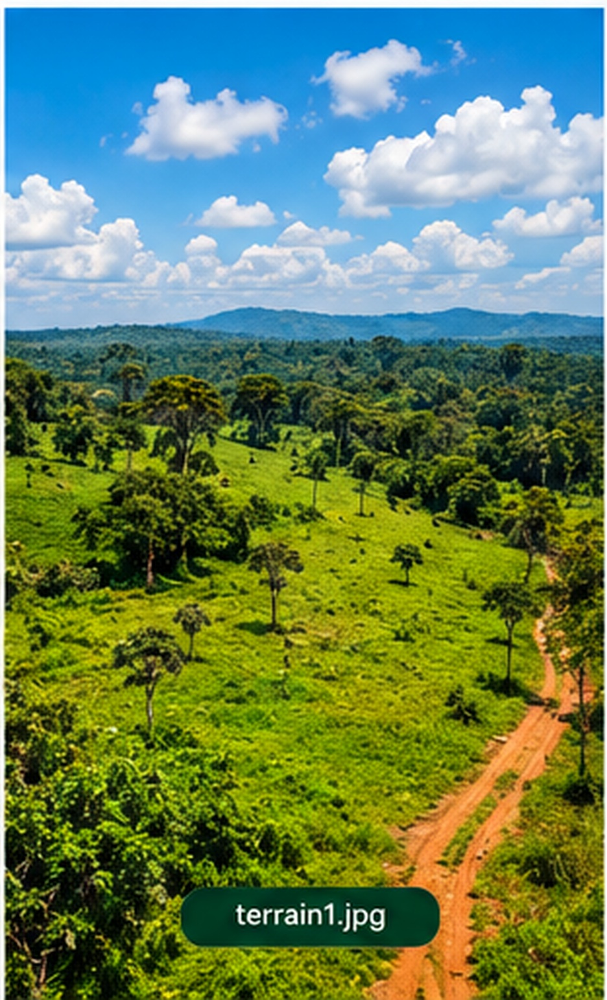
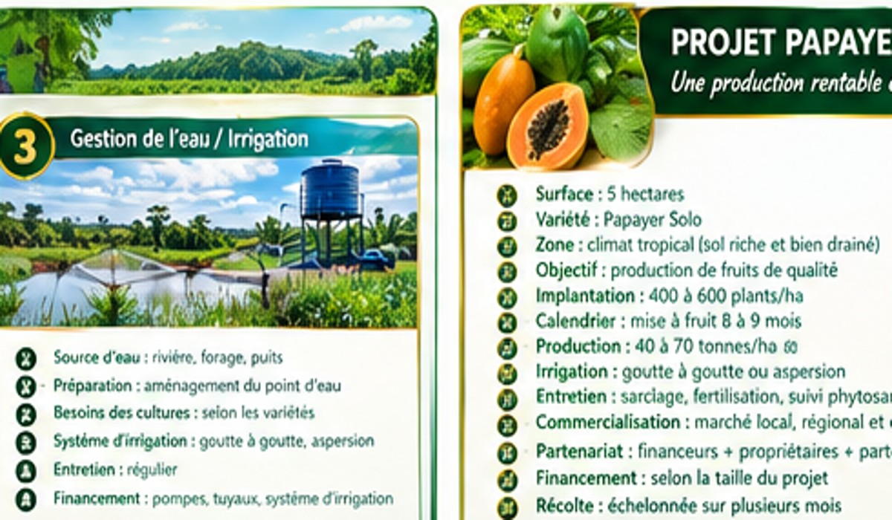
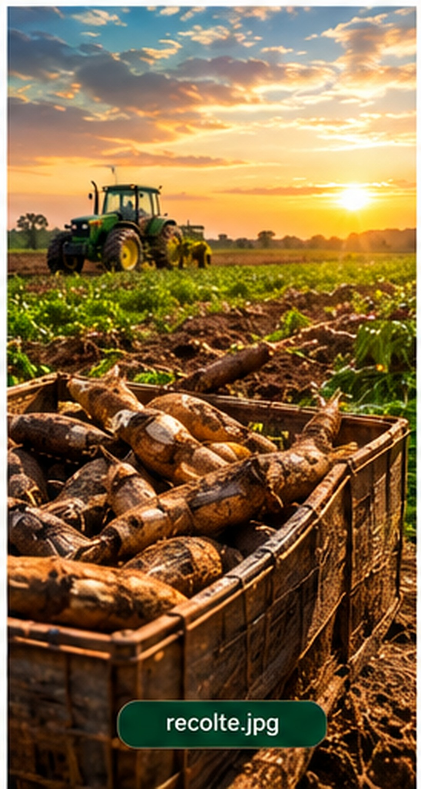
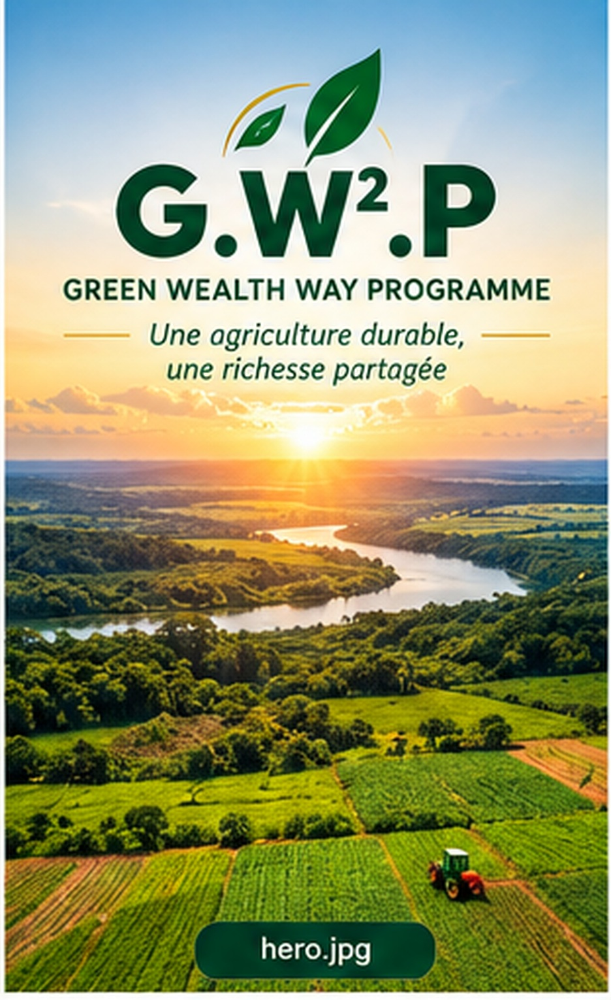

CÉRÉALE
Maïs
Culture destinée à valoriser les terres adaptées aux céréales, avec une organisation du cycle de production jusqu'à la récolte.
Voir la méthode →Développons ensemble une agriculture créatrice de valeur en République du Congo, grâce à un partenariat gagnant-gagnant entre financeurs, propriétaires de terres et partenaires du projet.
Une approche agricole personnalisée selon la zone, la terre disponible, les cultures adaptées et les moyens mobilisés.

G.W².P accompagne la mise en valeur des terres agricoles en associant les différents acteurs autour d'un même objectif : transformer les potentialités agricoles en activités organisées, productives et créatrices de valeur.
Le programme met en relation les ressources, les terres et les compétences nécessaires à la réalisation des projets agricoles.
L'objectif est de construire une collaboration claire, organisée et adaptée à chaque projet agricole.

Chaque fiche présente une culture, son terrain, son intérêt et les principaux éléments à prendre en compte.

Culture destinée à valoriser les terres adaptées aux céréales, avec une organisation du cycle de production jusqu'à la récolte.
Voir la méthode →
Culture importante pour l'alimentation et la valorisation agricole, à intégrer selon les caractéristiques de la zone.
Voir la méthode →
Production maraîchère diversifiée avec possibilité d'adapter les variétés aux besoins locaux et aux conditions du terrain.
Voir l'irrigation →
Culture fruitière valorisable dans les zones appropriées, avec une planification adaptée au cycle de production.
Voir la méthode →
Culture à cycle court pouvant être intégrée à une production maraîchère organisée et irriguée.
Voir l'irrigation →
Production maraîchère à développer dans les sols et zones adaptés, avec suivi de la préparation jusqu'à la récolte.
Voir la méthode →Le site présente les terrains disponibles, les espaces déjà exploités et les solutions permettant d'améliorer leur productivité.

Présentation de l'espace, de son potentiel et des cultures pouvant être envisagées après étude de la zone.
Exemple d'espace agricole organisé pour la production et le suivi des différentes étapes du projet.

Une gestion adaptée de l'eau permet de soutenir les cultures et d'améliorer la régularité de la production lorsque les conditions le permettent.
Une démarche structurée pour transformer une idée agricole en projet concret.
Identifier la zone, le terrain, les ressources disponibles et les possibilités agricoles.
Choisir les cultures, organiser les besoins, les équipements, le calendrier et les équipes.
Mettre en œuvre les opérations agricoles avec suivi des cultures et des conditions du terrain.
Organiser la récolte et la valorisation de la production dans une logique de développement durable et rentable.
Le programme prend en compte les moyens financiers mobilisables afin d'adapter l'ampleur et le choix des cultures au projet.

Chaque projet est étudié selon ses besoins réels : préparation du terrain, semences, matériel, irrigation, entretien, main-d'œuvre, récolte et autres postes nécessaires.
Une présentation visuelle des espaces agricoles, des cultures, de l'irrigation et des récoltes.
